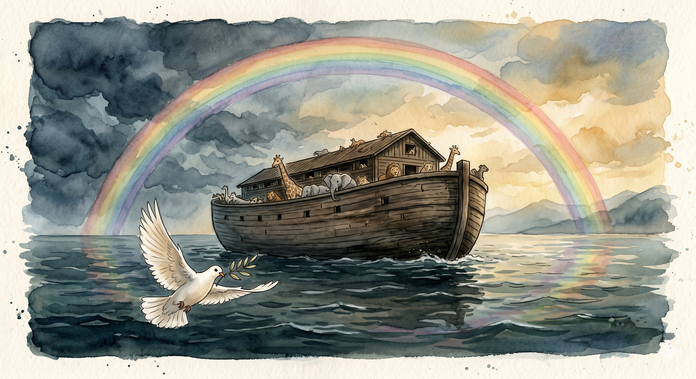
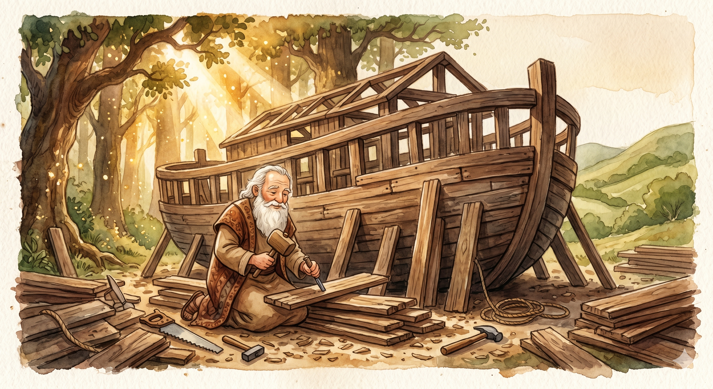
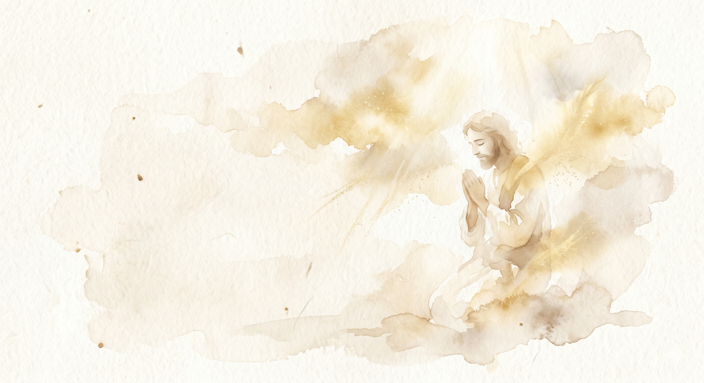

Imagine um mundo onde o céu começou a mudar de cor. Noé, um homem de muita fé, recebeu um chamado especial. Ele deveria construir algo gigantesco, algo que nunca ninguém tinha visto antes...
Enquanto os martelos batiam na madeira, Noé ensinava sua família sobre confiança. Dois a dois, os animais chegaram. Grandes e pequenos, lentos e velozes.


Cole aqui uma foto do seu pequeno fazendo o som de um dos animais da arca ou um desenho do arco-íris.